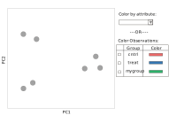
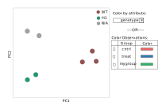
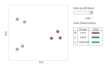
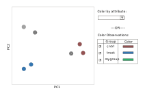

PCA and attributes/group visualization
For the examples below, we consider 7 samples/Observations, which we name S1,...,S7. The ObservationSet underlying this could look like:
{
"multiple": true,
"elements": [
{
"id": "S1",
"attributes": {
"genotype": {"attribute_type": "String", "value": "WT"}
}
},
{
"id": "S2",
"attributes": {}
},
{
"id": "S3",
"attributes": {}
},
{
"id": "S4",
"attributes": {
"genotype": {"attribute_type": "String", "value": "WT"}
}
},
{
"id": "S5",
"attributes": {
"genotype": {"attribute_type": "String", "value": "WT"}
}
},
{
"id": "S6",
"attributes": {
"genotype": {"attribute_type": "String", "value": "m1"}
}
},
{
"id": "S7",
"attributes": {
"genotype": {"attribute_type": "String", "value": "m1"}
}
}
]
}
Note that some of the samples have genotype of WT (S1,S4,S5) or m1 (S6,S7) and some do not have the "genotype" attribute defined (S2,S3). In general, there can be many more of these attributes. Some could conceivably be numbers, but we will only work with strings or bools.
The basic PCA plot
After running the initial PCA, we don't automatically color and the figure may look like:

If there are not attributes defined, then the dropdown would not have any values to filter upon. Similarly, if the user has not previously defined any custom ObservationSet instances, then the bottom table ("color Observations") would not be shown.
Coloring by attributes
By going through the attributes object of each Observation, we can collect all the possible attribute fields (here, only "genotype"). The dropdown would be populated by that attribute name and the user can select. As shown, the samples without a "genotype" attribute are simply left grey. The others are colored.
Open questions (depending on complexity): - Can we change the legend dynamically? (as shown) - Can we allow users to set their own colors? If so, how?

Coloring by user-defined groups/ObservationSets
Instead of coloring by the "attributes", we can allow users to color by the samplesets/ObservationSets they defined. To avoid complexity and confusion, users can only color by attribute OR observation, NOT by both. How do we show or communicate this on the page? Radio button next to the options? Or leave it with that "OR" as shown? Ideally, if someone selects an ObservationSet, it will "uncolor" any attribute selection made in the dropdown.
Open questions (depending on complexity): - Do we add a dynamic legend inside the plot? Or just leave the users to reference the colors on the side - Do we allow users to click on those colored rectangle to change the color? The current MEV allows the user to assign a color to each group, but I think it's fixed after that. Maybe that's the simplest? The user can then change the color for each group in the "metadata" view.
In this first example, only one group is selected and colored. Easy. 
In the more complex example, we can have samples that belong to: - None of the groups. They remain grey. - One of the groups. They get the group's color. - $>1$ of the groups. These get some other marker like a pattern, different-sized marker, etc. To avoid making this too complicated, just use the same markers for any sample belonging to $> 1$ groups. Otherwise we have to come up with markers for each unique combination and that could get into some kind of combinatorial nightmare.
Below, we can imagine the two samples with the striped markers belong to both the "cntrl" and "mygroup" groups. If the user unselects "mygroup", those circles would then change to the brown color.
